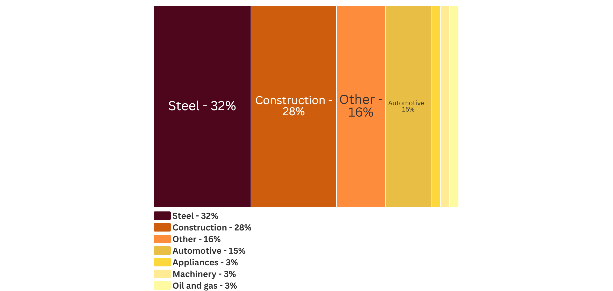

Iron is a transition metal. Metallic iron does not occur freely in nature as it tends to oxidize in air. Instead, elemental iron is contained in complex sulfide and oxide minerals. Pyrite is the most common iron-containing sulfide mineral. Iron-containing oxide minerals occur as red or yellow ochre (clay rock). Red ochre hosts one of the most common iron-containing minerals called hematite. Yellow ochres tend to host another iron-containing mineral called goethite. [1] [2]

Where was iron discovered?
Evidence of iron smelting goes back as far as 5000BC in Mesopotamia.
Iron metal working became more popular in 1200 BC, demarking the Iron Age (1200-332BC).
In 2BCE, China was manufacturing high-quality steel from pig iron by removing impurities with pressurized air.
This method was the basis for the Bessemer process.
The Bessemer process was coined in 1856 after English inventor,
Henry Bessemer developed a fast, cheap industrial-scale method to remove impurities (carbon, manganese, sulfur, silicon) from steel by blasting smelted iron ore with cold air.
Smelted iron ore is sometimes called 'pig iron' [3] [4].
As the Bessemer was an economically scalable process, steel was poised to be a critical material during the Industrial Revolution in 1760-1840.
Screenshot via Google Earth
What is iron used for?
What industries use iron?
Data from USGS National Minerals Information Center 2025
How much iron has been mined?
Cumulative Iron Mined by Country in Metric Tons
Data from USGS Mineral Commodity Reports 1913-2019

*Data Warning: Production data [MT] reported under former states were manually reassigned to modern territories to the best of the authors’ ability. Some national averages may be overinflated due to limited granularity on where within the former state the material was originally mined.